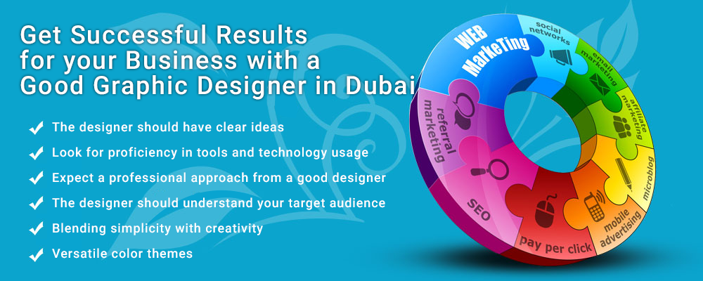

<?xml version="1.0" encoding="UTF-8"?><rss version="2.0"
	xmlns:content="http://purl.org/rss/1.0/modules/content/"
	xmlns:wfw="http://wellformedweb.org/CommentAPI/"
	xmlns:dc="http://purl.org/dc/elements/1.1/"
	xmlns:atom="http://www.w3.org/2005/Atom"
	xmlns:sy="http://purl.org/rss/1.0/modules/syndication/"
	xmlns:slash="http://purl.org/rss/1.0/modules/slash/"
	>

<channel>
	<title>graphic design &#8211; Blog</title>
	<atom:link href="https://www.ehorizon.ae/blog/category/graphic-design/feed/" rel="self" type="application/rss+xml" />
	<link>https://www.ehorizon.ae/blog</link>
	<description></description>
	<lastBuildDate>Thu, 01 Mar 2018 05:29:32 +0000</lastBuildDate>
	<language>en-US</language>
	<sy:updatePeriod>hourly</sy:updatePeriod>
	<sy:updateFrequency>1</sy:updateFrequency>
	<generator>https://wordpress.org/?v=4.4.15</generator>
	<item>
		<title>Why Hiring a Professional Graphic Designer is Essential for Your Business</title>
		<link>https://www.ehorizon.ae/blog/2017/06/20/why-hiring-a-professional-graphic-designer-is-essential-for-your-business/</link>
		<comments>https://www.ehorizon.ae/blog/2017/06/20/why-hiring-a-professional-graphic-designer-is-essential-for-your-business/#respond</comments>
		<pubDate>Tue, 20 Jun 2017 13:18:31 +0000</pubDate>
		<dc:creator><![CDATA[eHorizon]]></dc:creator>
				<category><![CDATA[graphic design]]></category>
		<category><![CDATA[graphic designer in Dubai]]></category>

		<guid isPermaLink="false">https://www.ehorizon.ae/blog/?p=200</guid>
		<description><![CDATA[<p>Although graphic designing is a form of art, it is surprising how a professional artist can bring high returns for your business. The role of graphic designers has helped in the fruitful growth and expansion of various small and large businesses. The purpose and role of a graphic designer in Dubai or elsewhere are quite [&#8230;]</p>
<p>The post <a rel="nofollow" href="../../../2017/06/20/why-hiring-a-professional-graphic-designer-is-essential-for-your-business/index.html">Why Hiring a Professional Graphic Designer is Essential for Your Business</a> appeared first on <a rel="nofollow" href="../../../index.html">Blog</a>.</p>
]]></description>
				<content:encoded><![CDATA[<p>Although graphic designing is a form of art, it is surprising how a professional artist can bring high returns for your business. The role of graphic designers has helped in the fruitful growth and expansion of various small and large businesses. The purpose and role of a <a href="../../../../graphic-design-services.html" target="_blank">graphic designer in Dubai</a> or elsewhere are quite different from that of an artist. Hiring a good graphic designer while designing and developing your websites is undoubtedly a good way of communicating with your site visitors in a clearer and comprehensive manner.</p>
<p>Reputed website design and development companies such as eHorizon allow business owners to hire professional graphic designers in Dubai. This allows owners to design and develop customized websites that convey the message and nature of their businesses to visitors. Right from helping you attract a larger section of the online market to aiming for higher conversion rates, graphic designers can help you expand the prospects of your business, leading to better sales and revenues in the long run.</p>
<p>The role of a graphic designer starts right from scratch that is designing mockups and layouts of your website to combining the right styles, typography, colors, and images that go along with the theme of your web pages. While maintaining complete synchronization with the theme, styles, and colors, graphic designers effortlessly make the website more user-friendly for your visitors. A professional and experienced graphic designer can add a lot of values to your business operations and brighten prospects for the future.</p>
<p></p>
<p><strong>Here’s what graphic designers can do for your business:</strong></p>
<p><strong>Prepare your business for the future</strong></p>
<p>People now have lesser time to read through every piece of information contained on your website. No one has the time to invest into reading and analyzing your website. Therefore, graphic designers make it easier for you to convey your message and expand the reach of your business offerings in a symbol-based language that only uses graphic styles and visual designs. Graphic designers have the power to help your business communicate with your visitors by using graphic art and visual styles instead of a long, complex paragraph. Whether it is to provide information on your products and services or market your business activities, graphic styles and visual designs can greatly help you communicate with your readers in a quick, easy, and effectual manner.</p>
<p><strong>Boost your brand</strong></p>
<p>In order to boost your brand and elevate your company’s status, your websites and pages need to stand out in the market. And graphic designers can easily help you stay ahead in the competition by making your pages more attractive and appealing for your visitors. Your company logo, the layout of your website and marketing materials, your chosen font, and the colors you use will give most customers their initial impression of what your company is like. It is what gives your company character. A professional graphic designer is able to expertly manipulate these elements to ensure that every customer perceives you in the right way. Graphic designing can help you build a strong brand and establish positive brand influence and impression that is unforgettable for your visitors and online users.</p>
<p><strong>Saves your time</strong></p>
<p>Not only in the current scenario, but graphic designing can also help you save a lot of time in future. For example, the use of flash animations, video editing, and other advanced design software can allow you to make better use of graphic designs and styles whenever necessary in the future. It is important to remember that graphic designing not only benefit you in the present times, but you can also keep these graphic design features to their best use in the long run.</p>
<p><strong>Deliver consistent message</strong></p>
<p>One of the most important features of a well-designed website is the ability to deliver messages in a structured and consistent manner to your visitors and readers. An inconsistent design makes the customer think that you provide an inconsistent service and that is not a good way to inspire trust among your audience. A graphic designer can create a design style guide which can help you deliver a consistent message right across your brand. A style guide is of crucial importance if you’re planning on expanding your brand to make sure everyone is on the same page. Designers can boost your company’s visual branding efforts and help your visitors perceive your brand as a reputed, reliable and consistent platform for their needs and requirements.</p>
<p><strong>Improve returns on digital marketing</strong></p>
<p>Graphic designing forms an integral part of a company’s digital marketing mix. It is usually observed that the use of appropriate images relevant to the content of your website can help you attract the attention of an increasing number of site visitors. To boost marketing campaigns, quality graphics and images have proven to be one of the essential factors in promoting the name and growth of a business. For example:</p>
<ul>
<li>Blog articles posted with images get more views than blogs or articles without images.</li>
<li>Twitter and Facebook posts with images attract 2.3 times as many shares and tweets.</li>
<li>Press releases with images attract increased views by 45%.</li>
<li>For e-commerce websites, users find it more valuable when a high-resolution image of the product is displayed than just focusing on the product information and description only. The use of high-quality images on e-commerce platforms helps users make an easier and faster decision with their purchase.</li>
</ul>
<p><strong>Creative thinking</strong></p>
<p>Graphic designers need to be extremely creative while they are at work. This creative balance and unique ideas flowing out of your graphic designer’s mind is what will establish your websites and pages as unique, creative, and distinct from your competitors in the market. It is necessary to dash in a bit of creativity and make websites abstract with a professional theme and layout. Good graphic designers have the ability and skill to combine both creativity and professionalism to showcase your brand in the best way possible. As a result, a graphic designer can help with your business decisions unrelated to their immediate areas of expertise by showing you how to look at it from a different angle.</p>
<p><strong>Convert visitors into customers</strong></p>
<p>Good design does not just make your websites and pages look good, but also compel your site visitors to take some action. Visual art and graphic designs can leave a favorable brand impression on first-time visitors, which encourage them to make purchases on your website. Graphic designing can easily help you convert an increasing number of visitors into potential customers or prospective buyers, thus leading to higher conversion rates for your business. The more visitors get converted into customers, the better revenues and profits are generated for your company in the long run.</p>
<p>Graphic designers can take your business to a completely different level, regardless of your business type, size or nature. Especially for small-scale companies and startups, it is advisable that you hire a professional graphic designer who can make your websites more appealing and attractive to look at for your visitors. Take the first step toward establishing a positive brand impression with outstanding web and graphic designing services.</p>
<p>The post <a rel="nofollow" href="../../../2017/06/20/why-hiring-a-professional-graphic-designer-is-essential-for-your-business/index.html">Why Hiring a Professional Graphic Designer is Essential for Your Business</a> appeared first on <a rel="nofollow" href="../../../index.html">Blog</a>.</p>
]]></content:encoded>
			<wfw:commentRss>https://www.ehorizon.ae/blog/2017/06/20/why-hiring-a-professional-graphic-designer-is-essential-for-your-business/feed/</wfw:commentRss>
		<slash:comments>0</slash:comments>
		</item>
		<item>
		<title>Get Successful Results for your Business with a Good Graphic Designer in Dubai</title>
		<link>https://www.ehorizon.ae/blog/2016/11/22/get-successful-results-for-your-business-with-a-good-graphic-designer-in-dubai/</link>
		<comments>https://www.ehorizon.ae/blog/2016/11/22/get-successful-results-for-your-business-with-a-good-graphic-designer-in-dubai/#respond</comments>
		<pubDate>Tue, 22 Nov 2016 06:22:53 +0000</pubDate>
		<dc:creator><![CDATA[eHorizon]]></dc:creator>
				<category><![CDATA[graphic design]]></category>
		<category><![CDATA[graphic designers in Dubai]]></category>

		<guid isPermaLink="false">https://www.ehorizon.ae/blog/?p=151</guid>
		<description><![CDATA[<p>The success of a good graphic designer in Dubai rests on a lot of factors that clearly distinguish between a good and a bad design. When you join hands with a good graphic designer in Dubai, you can undoubtedly reap promising results for your business, and turn your websites and webpages into prolific platforms for [&#8230;]</p>
<p>The post <a rel="nofollow" href="../../../2016/11/22/get-successful-results-for-your-business-with-a-good-graphic-designer-in-dubai/index.html">Get Successful Results for your Business with a Good Graphic Designer in Dubai</a> appeared first on <a rel="nofollow" href="../../../index.html">Blog</a>.</p>
]]></description>
				<content:encoded><![CDATA[<p style="text-align: justify;">The success of a good graphic designer in Dubai rests on a lot of factors that clearly distinguish between a good and a bad design. When you join hands with a good graphic designer in Dubai, you can undoubtedly reap promising results for your business, and turn your websites and webpages into prolific platforms for your visitors and customers. However, that is only possible when you understand how to differentiate the qualities within a good and a not-so-good designer when you are hiring one for your website graphic design project.</p>
<p style="text-align: justify;">You will find innumerable graphic designers in Dubai that can give a creative and innovative look to your websites. Yet, there is much more that is required from a graphic designer apart from just having the knowledge of color combinations and good styles and layout. To deliver outstanding results, graphic designers need to have strong skills right in place and a great level of dedication and commitment. It is really not a daunting task to find that right person for your graphic design projects. However, it does take some amount of time and patience to be able to pick the right graphic designer in Dubai.</p>
<p style="text-align: justify;">A good design has the ability to do all the talking for your business products and services. It is broadly the first impression that your visitors get when they access your website, which can either keep them hooked to your website or convince them to not visit your website again. To retain visitors and turn them into potential customers, it is imperative for any small and large scale business to hire a proficient <strong><a href="../../../../graphic-design-services.html">graphic designer in Dubai</a></strong> as good designs can greatly help create a good brand impression along with acting as a strong base for marketing and promoting your products and services.</p>
<p style="text-align: justify;">Ideally, consider the following factors to ensure that you are dealing with the best graphic designer in Dubai.</p>
<p style="text-align: justify;"></p>
<p style="text-align: justify;"><strong>The designer should have clear ideas</strong></p>
<p style="text-align: justify;">A good designer must be able to clearly realize your dream graphic design and understand your requirements to be able to create the best designs for your business. With a clear vision, designers can create compelling styles for your business websites or webpages and do this with proper flow of ideas, fusing creativity with simplicity when it comes to choosing the right colors, themes, and styles for your pages.</p>
<p style="text-align: justify;"><strong>Look for proficiency in tools and technology usage</strong></p>
<p style="text-align: justify;">The designer you wish to hire must be equipped with the latest graphic designing tools and have a complete knowledge of using other design technologies and software to produce finished results. Knowing how to use the right tools and software helps a good designer to produce clear-cut results, especially when it comes to setting the typography, page layout, and chromatics in the right manner. The designer must be able to implement styles that do not just look modern and appealing, but also conveys your brand in a powerful way.</p>
<p style="text-align: justify;"><strong>Expect a professional approach from a good designer</strong></p>
<p style="text-align: justify;">No projects can be delivered successfully without showing a sense of professionalism and dedication. Keeping the technical qualities apart, the designer must be in the best position to clearly understand client requirements and have a defined and professional approach for delivering projects with the best outcomes. Being responsible, communicative and professional with clients add great value to the entire graphic designing process that only leads to successful and fruitful results for businesses.</p>
<p style="text-align: justify;"><strong>The designer should understand your target audience</strong></p>
<p style="text-align: justify;">Before the designer starts working on your project, he must already be well-versed with the type of customers he needs to target. As a client, it is for you to communicate the idea of your target audience, and a good designer should not be taking more than a few minutes to understand the audience he needs to target and accordingly implement a design that can very effectively and quickly do so. Once the designer gets your target audience, it is only then that he will be able to create designs and styles that can encourage and motivate the right market to make your potential customers visit your websites and make relevant purchases.</p>
<p style="text-align: justify;"><strong>Blending simplicity with creativity</strong></p>
<p style="text-align: justify;">The entire presentation of the website must be clean, clear and simple. It is up to the skills and training of the designer to be able to perfectly blend simplicity while keeping the creative designs and modern styles intact. The whole idea is to create designs that can effectively communicate your business message and get your products and services across to the right audience. Using clear images, avoiding blurred-out presentations and other designing glitches are some skills that you must look for in your designer.</p>
<p style="text-align: justify;"><strong>Versatile color themes</strong></p>
<p style="text-align: justify;">Colors express a lot, and when it comes to using the right color combination in your websites, the graphic designer cannot leave room for a mistake. A good graphic designer knows how to let your business communicate with your customers using the right color themes and combinations. The importance of using the perfect color and color combinations is one important quality of good graphic designers, which you really must consider when you hire one for any of your projects.</p>
<p style="text-align: justify;">By investing some time and effort along with patience, you can easily hire proficient and good graphic designers in Dubai. You can either choose to go with full-time or freelance graphic designers, however, just make sure that the person you are hiring for the job is responsible and professional enough to make the least number of errors, produces great results and creates intricate designs for your websites.</p>
<p>The post <a rel="nofollow" href="../../../2016/11/22/get-successful-results-for-your-business-with-a-good-graphic-designer-in-dubai/index.html">Get Successful Results for your Business with a Good Graphic Designer in Dubai</a> appeared first on <a rel="nofollow" href="../../../index.html">Blog</a>.</p>
]]></content:encoded>
			<wfw:commentRss>https://www.ehorizon.ae/blog/2016/11/22/get-successful-results-for-your-business-with-a-good-graphic-designer-in-dubai/feed/</wfw:commentRss>
		<slash:comments>0</slash:comments>
		</item>
	</channel>
</rss>

<!-- Localized -->